← Overall ranking · Lab gallery
F10 · Quotes List — version ranking
Family task: Quotes list (/quotes): review proposals, compare breakdowns, and accept or decline quotes - triage 12 captured quotes by status, spot expiry risk, and open a quote to decide.
Baseline context: Captured set (all versions): 12 quotes, Rs.6,67,390.00 total; Pending awaiting action 0; Accepted/approved 5 (Rs.6,55,000.00, incl. Khandesh Spice Rs.75,000, Naasih Wine Club Rs.1,20,000, Nagpur Cold Storage Rs.1,08,000, Kolhapur Leather Rs.48,000); Declined 0; seven Rs.1,770.00 Draft quotes whose captured request title is an XSS test string, valid until Oct 20, 2026, one flagged expiring <24h (deposit Rs.885 = 50%). Page <title> names differ from manifest.json names for this family - reports use the pages' own titles.
Leading version(s): V1 · Confidence: medium — Complete screenshot set + interaction/axe/keyboard runs in one pinned environment; single evaluator; designed empty/loading/error states generally have no public trigger and were not observed unless a version's task notes say so; system-font fallback instead of Outfit.
Tie groups: V4, V5 (65.0–65.0) · Production comparison: Comparison place #5 of 6 at 53.8. Lab-only winner remains V1. Practical tie-break used inside a 2.0-point group.
Manual repairs applied · 29 October 2026. V1–V5 have been updated. F10 fix log and current verification.
Scores, issues and screenshots below are the original pre-fix review, not a new ranking. “Source (unmodified)” refers to that historical snapshot; the linked pages now include repairs.
Lab-only scores
| Rank | Version | Total /100 | Task clarity (w25) | Usability (w20) | Visual craft (w15) | Responsive (w15) | Accessibility (w15) | Integrity (w10) | Major+ issues |
|---|---|---|---|---|---|---|---|---|---|
| #1 | V1 · Action-First Commercial Hub | 68.8 | 3 /4 | 3 /4 | 2 /4 | 3 /4 | 3 /4 | 2 /4 | 0 |
| #2 | V4 · Lifecycle Stage Lanes | 65.0 | 3 /4 | 3 /4 | 3 /4 | 2 /4 | 2 /4 | 2 /4 | 2 |
| #3 | V5 · Split Master-Detail Workbench | 65.0 | 3 /4 | 3 /4 | 3 /4 | 2 /4 | 2 /4 | 2 /4 | 3 |
| #4 | V2 · Precision Financial Ledger | 61.2 | 3 /4 | 3 /4 | 2 /4 | 2 /4 | 2 /4 | 2 /4 | 2 |
| #5 | V3 · Agreement Portfolio Grid | 55.0 | 2 /4 | 3 /4 | 3 /4 | 1 /4 | 2 /4 | 2 /4 | 1 |
Formula: total = Σ(weight × score ÷ 4). Dimension scores are integers 0–4 against fixed anchors (25 task clarity · 20 usability · 15 visual craft · 15 responsive · 15 accessibility · 10 integrity). Totals within 2.0 form a practical group; ties are ordered by task clarity, fewer major/critical issues, then responsive score; exact ties after these checks share rank (=).
Production page report and comparison rank
Comparison place #5 of 6 at 53.8. Lab-only winner remains V1. Practical tie-break used inside a 2.0-point group.
Live production reference. Same rubric, separate from lab version records. Not a lab template and not an automatic winner. Route: /quotes. Outcome: reviewed. Confidence: low.
| Comparison place | Page | Total /100 | Task clarity | Usability | Visual craft | Responsive | Accessibility | Integrity | Major+ issues |
|---|---|---|---|---|---|---|---|---|---|
| #5 | Production · /quotes | 53.8 | 2 /4 | 2 /4 | 2 /4 | 3 /4 | 2 /4 | 2 /4 | 1 |
Heading Quotes and one select were visible. Quote rows, status, and expiry were not confirmed in the captured structure. This is incomplete observation, not proof of an empty list.
Order if production is included
- V1 — 68.8 · comparison #1
- V4 — 65.0 · comparison #2 · inside a 2.0-point group
- V5 — 65.0 · comparison #3 · inside a 2.0-point group
- V2 — 61.2 · comparison #4
- Production — 53.8 · comparison #5 · inside a 2.0-point group
- V3 — 55.0 · comparison #6 · inside a 2.0-point group
Lab-only ranks in the table above are unchanged. Inside a 2.0-point group, task clarity, fewer major issues, then responsive score decide the comparison place.
Observed issues
- Shared shell contrast finding.
Not observed
- Quote rows and a quote detail page were not confirmed.
Desktop document overflow was 0 on reviewed routes. An earlier mobile pass of accounts A and B also had no document overflow and a menu control; opening that menu was not proven. Dark mode was not activated. axe-core reported four serious color-contrast nodes on the shared shell. No production screenshot was stored. None stored. Production pages can contain account data.
Shared shell / family-wide findings
- Shell differs from F03-F09: in-page variant switcher ('F10 Variants: V1...V5') + state-simulation chips (Populated/Pending Sim (A5)/Empty/Loading/Error) occupy product chrome and ~40% of the mobile first screen in all versions; 'Skip to main content' is permanently visible text at top-left.
- Light mode is axe-clean (0 violations in V1-V4); dark mode contrast fails systemically (x10 V1 to x79 V4) - dark palette was not held to the same AA bar. Scored under accessibility per version.
- Internal codes C23/A5 and a literal XSS-test string appear in client copy family-wide; rendering is safely escaped (text), the issue scored is communication, not security.
- Mobile nav probe (aria-label 'navigation menu') does not match this shell's hamburger - recorded inconclusive for F10-F13, not scored as broken; hamburger is visible in mobile screenshots.
Per-version evidence
#1 · V1 · Action-First Commercial Hub — 68.8
Source (unmodified): client-portal-lab/families/F10-quotes-list/V1/index.html
· Raw evidence: review-evidence/raw/F10-V1-raw.json
Task clarity (3/4): Expiry Watch banner + 'Inspect Accepted Quote' / 'Review Expiring Quote' shortcuts surface the two things worth attention; KPI cards double as filters (TOTAL 12 - PENDING 0 - ACCEPTED 5 - DECLINED 0).
Usability (3/4): Status filter works (Sent / pending); per-quote Review Quote actions. Banner stack pushes the list to 2 visible quotes on first desktop screen.
Visual craft (2/4): Banner-heavy and dense small type; permanently-visible 'Skip to main content' text and the lab variant/state bars sit in the product chrome (family shell trait).
Responsive (3/4): The family's only zero-horizontal-scroll mobile layout - cards/list stack within 390px despite the harness bars eating the first screen.
Accessibility (3/4): Light mode: zero axe violations and 12/12 focus-styled stops. Dark mode drops to contrast x10 - the least dark degradation in the family.
Integrity (2/4): Rows display a captured XSS-test request title literally ('<img src=x onerror=alert(1)> C23 ESCAPED') with an engineering footer about the C23 guard - safe rendering, alarming client copy.
Interaction / task results (V1)
| Task | Result |
|---|---|
| T1_first_screen | H1='Quotes'; see desktop/mobile top screenshots |
| T2_keyboard | 12/12 stops focus-styled, 12/12 in viewport |
| T3_core_desktop | pass via select "Sent / pending" |
| T3_core_mobile | pass via select "Sent / pending" |
| T4_theme | toggle: pass (dark false->true); dark capture applied=True |
| T5_demo_honesty | no [data-demo] element probed (none present or pilot family - see probe2) |
| T6_mobile | h-scroll mobile=0; nav probe opened=False btnW=None; tap<24px=3 |
| T7_axe | desktop: no violations; dark: color-contrast x10 |
Issues (1)
- minor
F10-V1-I1axe dark: color-contrast x10 (.brand-mark, .portal-pill) (axe-core 4.10.2 dark)

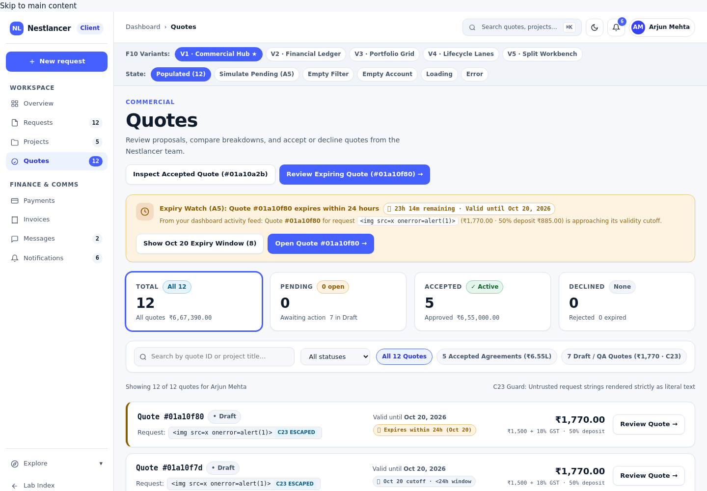

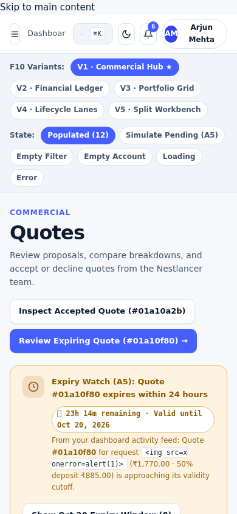

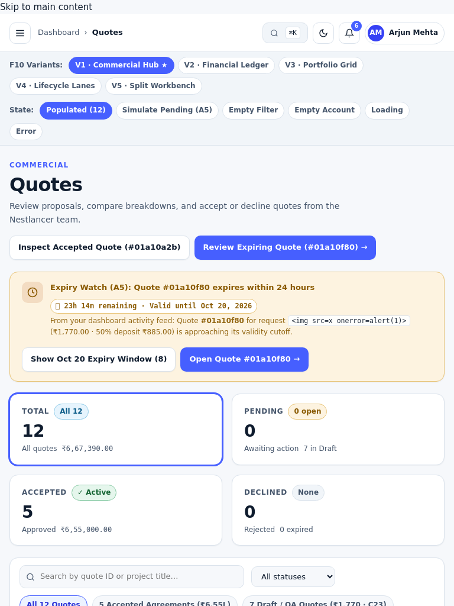

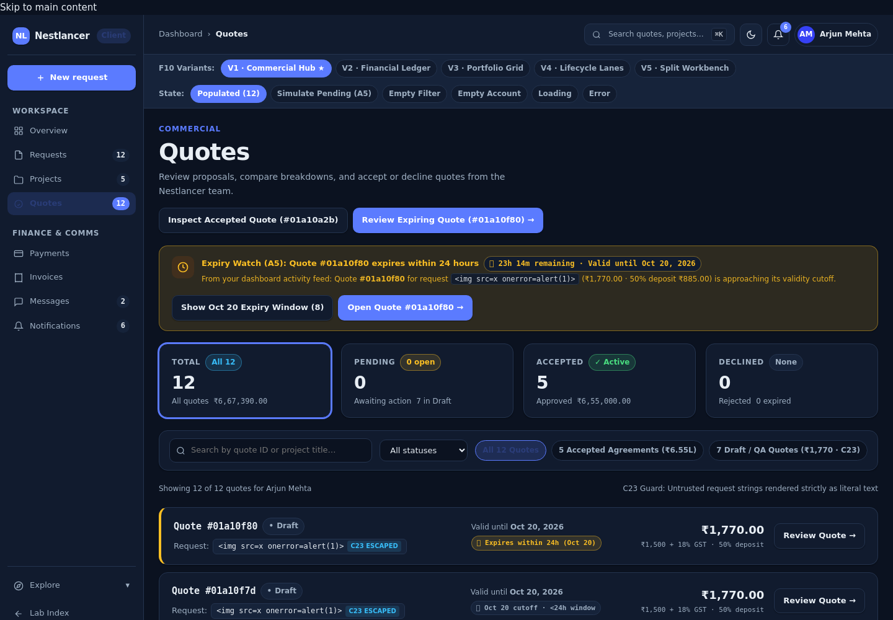

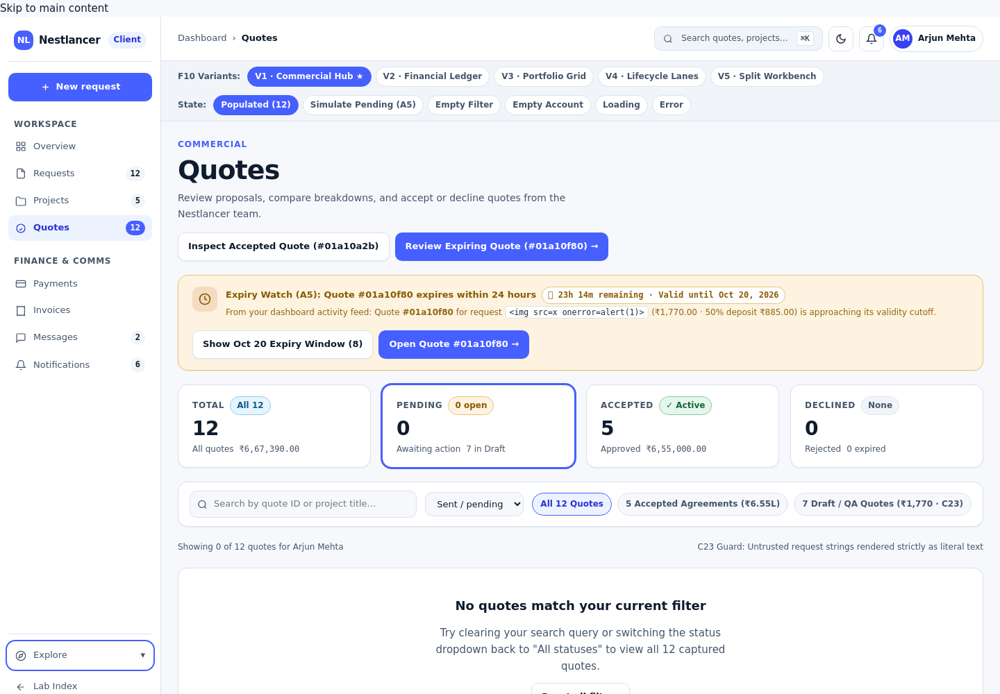


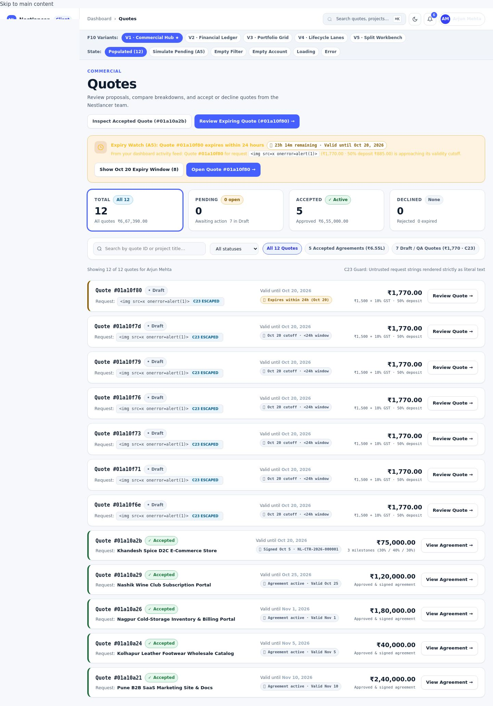
#4 · V2 · Precision Financial Ledger — 61.2
Source (unmodified): client-portal-lab/families/F10-quotes-list/V2/index.html
· Raw evidence: review-evidence/raw/F10-V2-raw.json
Task clarity (3/4): All 12 quotes in one ledger with Valid-until countdown, Tax & Schedule (18% GST - 50% deposit Rs.885) and totals - comparison-ready for a finance-minded client.
Usability (3/4): Unified search/status/sort strip works; Preview + Open per row. Inline accordion breakdowns (concept) not separately opened in this run.
Visual craft (2/4): KPI labels are text-concatenation bugs - 'TOTAL100%', 'PENDINGACTION', 'ACCEPTEDSIGNED', 'DECLINED0%' - visible in light and dark.
Responsive (2/4): 59px horizontal page scroll at 390px; the ledger's columns cannot all fit and the topbar avatar clips.
Accessibility (2/4): Light: zero axe violations. Dark: contrast x77, including the current 'Quotes' nav item rendered near-illegible (dark blue on navy) - a supported theme with systemic AA failures.
Integrity (2/4): Column literally headed 'REQUEST / DELIVERABLE (C23 GUARDED)' with 'A5 COUNTDOWN' codes - internal requirement IDs as client copy.
Interaction / task results (V2)
| Task | Result |
|---|---|
| T1_first_screen | H1='Quotes'; see desktop/mobile top screenshots |
| T2_keyboard | 12/12 stops focus-styled, 12/12 in viewport |
| T3_core_desktop | pass via select "Sent / pending" |
| T3_core_mobile | pass via select "Sent / pending" |
| T4_theme | toggle: pass (dark false->true); dark capture applied=True |
| T5_demo_honesty | no [data-demo] element probed (none present or pilot family - see probe2) |
| T6_mobile | h-scroll mobile=59; nav probe opened=False btnW=None; tap<24px=14 |
| T7_axe | desktop: no violations; dark: color-contrast x77 |
Issues (5)
- major
F10-V2-I1Horizontal page scroll at 390px (59px); rightmost: {'tag': 'BUTTON', 'cls': 'avatar-btn', 'right': 449} (raw overflow_mobile; F10-V2-mobile-light-top.png) - minor
F10-V2-I2axe dark: color-contrast x77 (.brand-mark, .portal-pill) (axe-core 4.10.2 dark) - minor
F10-V2-I314 mobile tap targets under 24px, e.g. [{'text': 'Skip to main content', 'w': 156, 'h': 18}, {'text': 'Dashboard', 'w': 71, 'h': 21}, {'text': 'Quote #01a10f80', 'w': 117, 'h': 15}] (raw tapTargetsMobile) - major
F10-V2-I4Dark-mode contrast collapses (77 nodes; current nav item illegible) (dark screenshot + axe dark) - minor
F10-V2-I5KPI label concatenation: TOTAL100% / PENDINGACTION / ACCEPTEDSIGNED (screenshots)

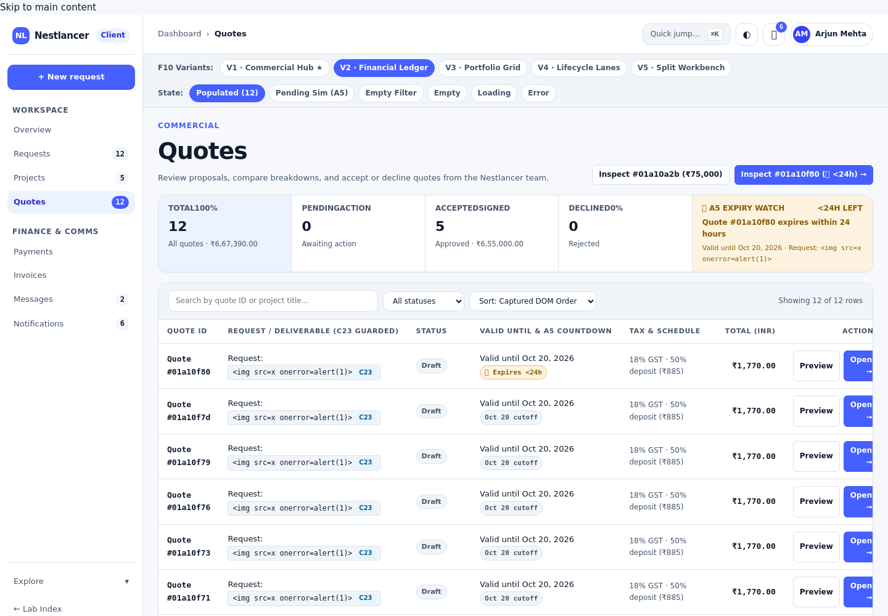

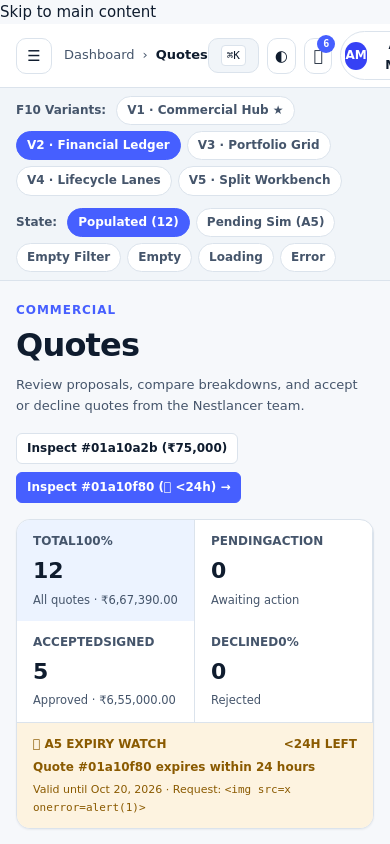

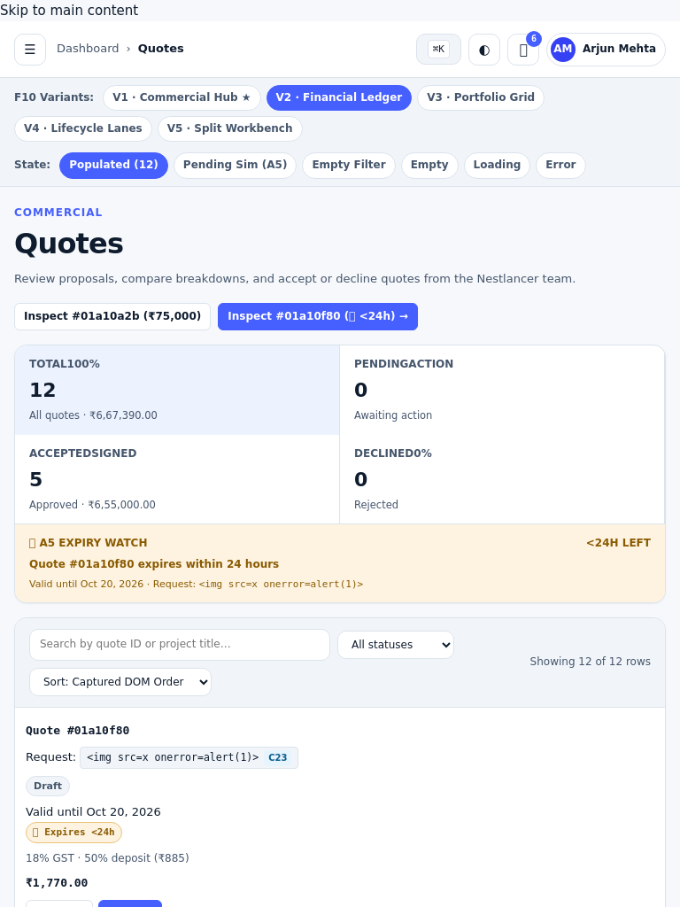

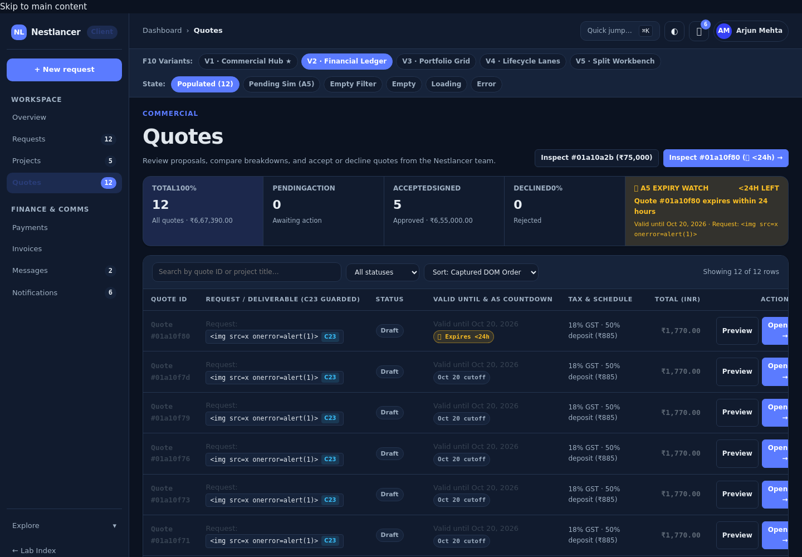

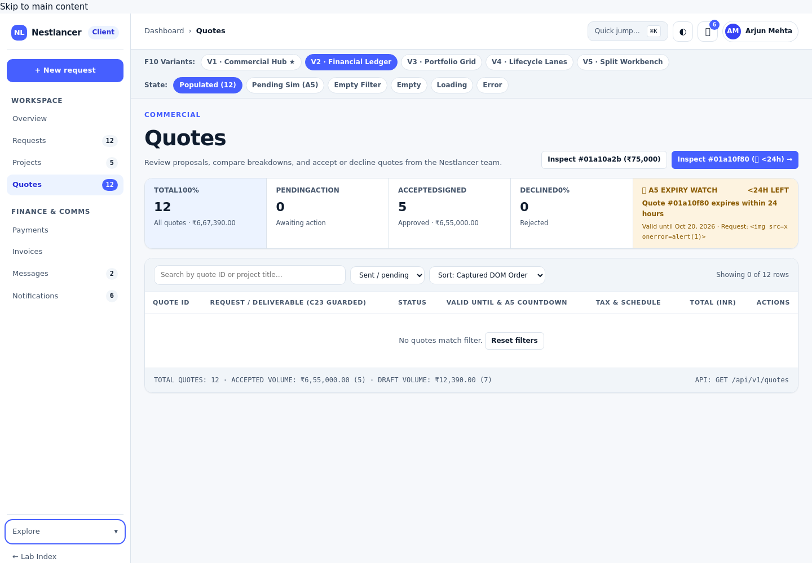


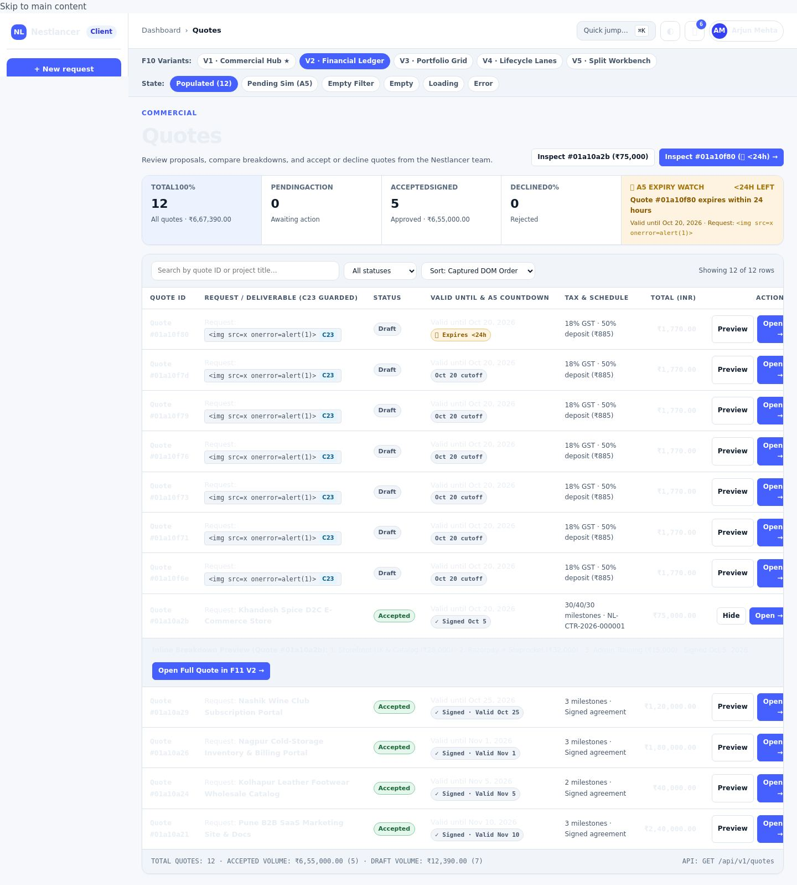
#5 · V3 · Agreement Portfolio Grid — 55.0
Source (unmodified): client-portal-lab/families/F10-quotes-list/V3/index.html
· Raw evidence: review-evidence/raw/F10-V3-raw.json
Task clarity (2/4): Grid leads with Rs.1,770 Draft QA quotes while the commercially important accepted agreements (Rs.75,000 etc.) sit below; with Pending=0 there is no decision hero content to lead with, and the grid does not reprioritise.
Usability (3/4): Search/status/sort strip and per-card Open Quote work; comparison modal from the concept was not separately opened.
Visual craft (3/4): Cards themselves are clean and consistent (status pill, validity, amount) - the tidiest row presentation here.
Responsive (1/4): Worst overflow in family: 109px horizontal scroll at 390px - the card grid does not truly single-column.
Accessibility (2/4): Light axe-clean; dark contrast x51. Small 'Oct 20 cutoff' chips add low-contrast microtext in both themes' spirit.
Integrity (2/4): Same XSS-fixture/C23 row copy; draft QA quotes are indistinguishable in importance treatment from signed agreements.
Interaction / task results (V3)
| Task | Result |
|---|---|
| T1_first_screen | H1='Quotes'; see desktop/mobile top screenshots |
| T2_keyboard | 12/12 stops focus-styled, 12/12 in viewport |
| T3_core_desktop | pass via select "Sent / pending" |
| T3_core_mobile | pass via select "Sent / pending" |
| T4_theme | toggle: pass (dark false->true); dark capture applied=True |
| T5_demo_honesty | no [data-demo] element probed (none present or pilot family - see probe2) |
| T6_mobile | h-scroll mobile=109; nav probe opened=False btnW=None; tap<24px=2 |
| T7_axe | desktop: no violations; dark: color-contrast x51 |
Issues (2)
- major
F10-V3-I1Horizontal page scroll at 390px (109px); rightmost: {'tag': 'DIV', 'cls': 'header-actions', 'right': 499} (raw overflow_mobile; F10-V3-mobile-light-top.png) - minor
F10-V3-I2axe dark: color-contrast x51 (.brand-mark, .portal-pill) (axe-core 4.10.2 dark)

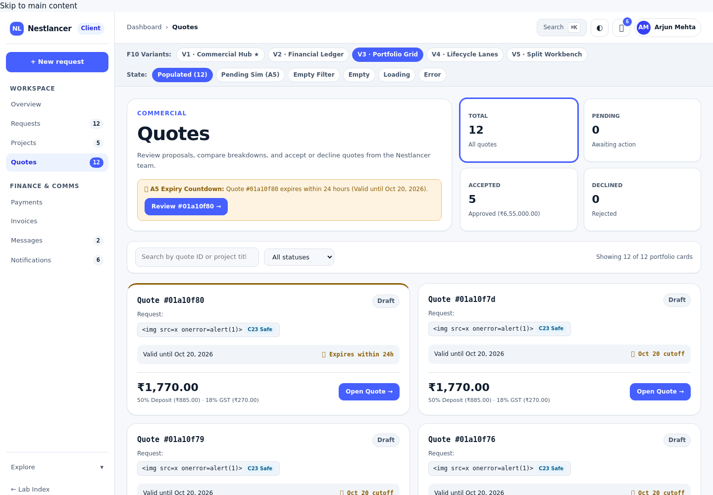

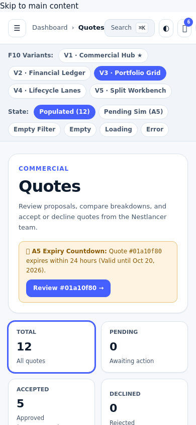

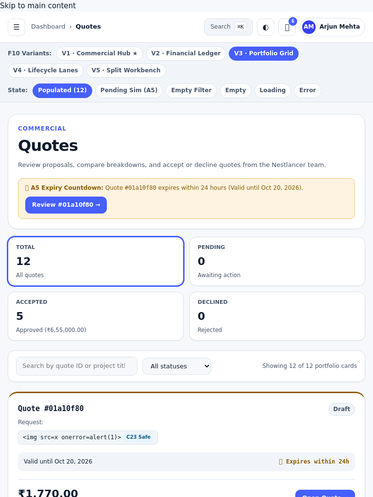

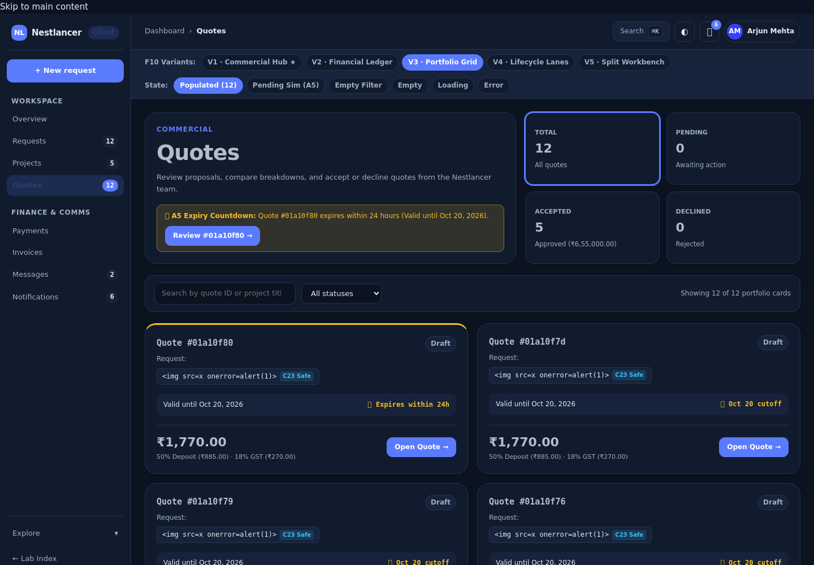

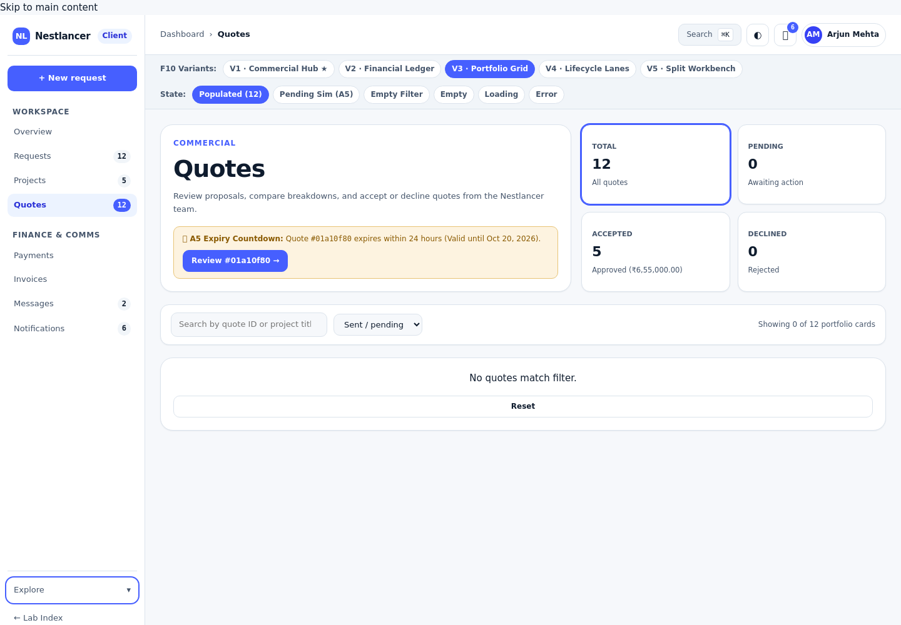


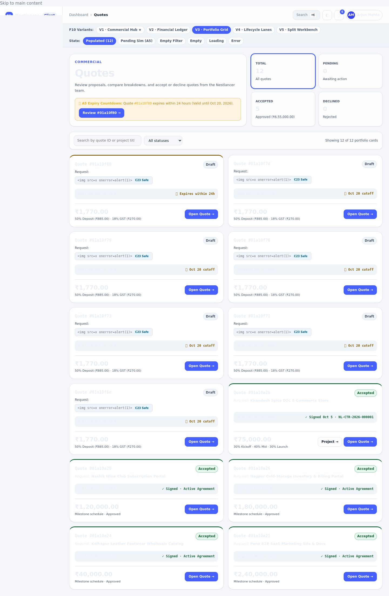
#2 · V4 · Lifecycle Stage Lanes — 65.0
Source (unmodified): client-portal-lab/families/F10-quotes-list/V4/index.html
· Raw evidence: review-evidence/raw/F10-V4-raw.json
Task clarity (3/4): Stage grouping is decision-shaped: Stage 1 Expiring & Action Watch (1 quote) before Stage 2 Accepted & Signed Agreements (5 quotes - Total Rs.6,55,000), with a Chronological view toggle for the plain list.
Usability (3/4): Filter works; stage lanes + Open Quote per card; slide-over detail drawer (concept) not separately opened.
Visual craft (3/4): Stage headers with counts/totals give the list a readable rhythm other versions lack.
Responsive (2/4): 98px horizontal scroll at 390px; KPI cards themselves adapt (2x2) but the harness/topbar row overflows.
Accessibility (2/4): Light axe-clean; dark contrast x79 - the family's highest count, same systemic dark-palette failure as V2.
Integrity (2/4): Stage naming is honest lifecycle language; A5/C23 internal codes still appear in banners and rows.
Interaction / task results (V4)
| Task | Result |
|---|---|
| T1_first_screen | H1='Quotes'; see desktop/mobile top screenshots |
| T2_keyboard | 12/12 stops focus-styled, 12/12 in viewport |
| T3_core_desktop | pass via select "Sent / pending" |
| T3_core_mobile | pass via select "Sent / pending" |
| T4_theme | toggle: pass (dark false->true); dark capture applied=True |
| T5_demo_honesty | no [data-demo] element probed (none present or pilot family - see probe2) |
| T6_mobile | h-scroll mobile=98; nav probe opened=False btnW=None; tap<24px=2 |
| T7_axe | desktop: no violations; dark: color-contrast x79 |
Issues (3)
- major
F10-V4-I1Horizontal page scroll at 390px (98px); rightmost: {'tag': 'DIV', 'cls': 'header-actions', 'right': 488} (raw overflow_mobile; F10-V4-mobile-light-top.png) - minor
F10-V4-I2axe dark: color-contrast x79 (.brand-mark, .portal-pill) (axe-core 4.10.2 dark) - major
F10-V4-I3Dark-mode contrast x79 nodes (systemic in supported theme) (axe dark)

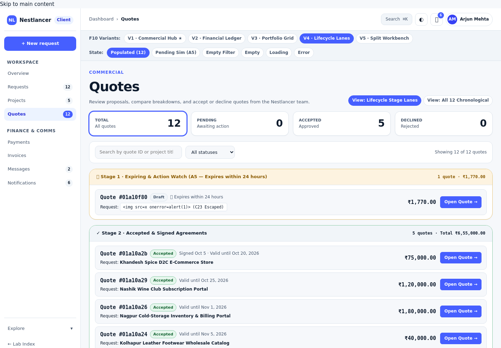

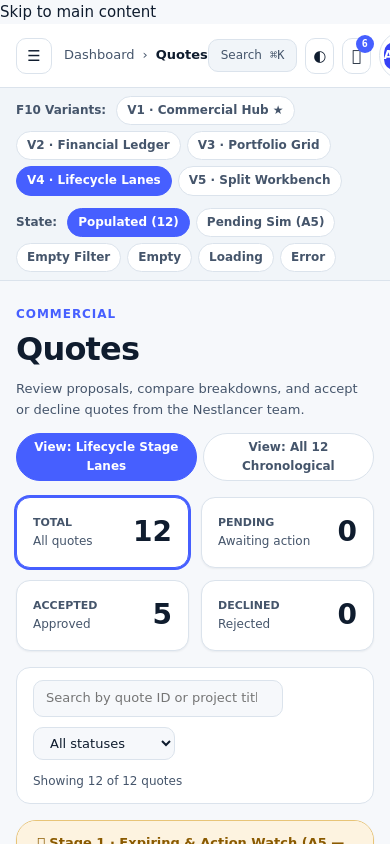

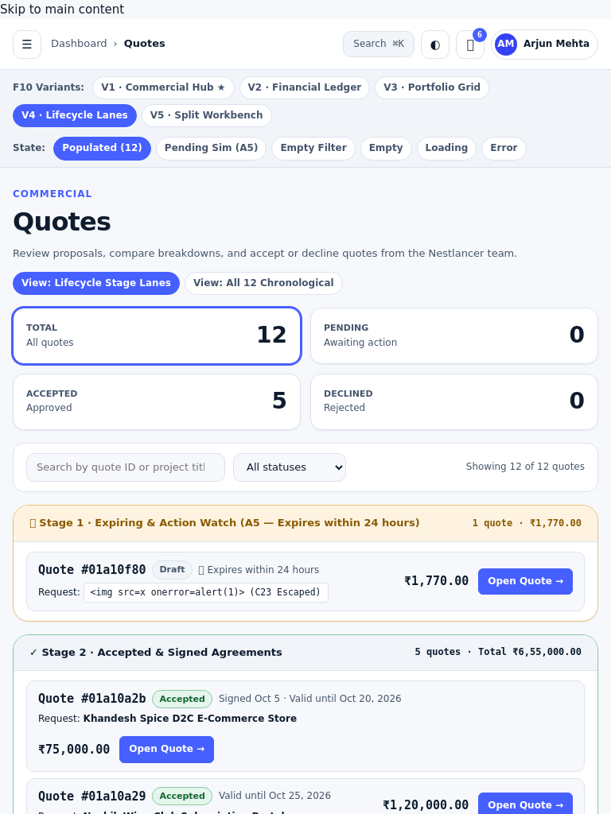

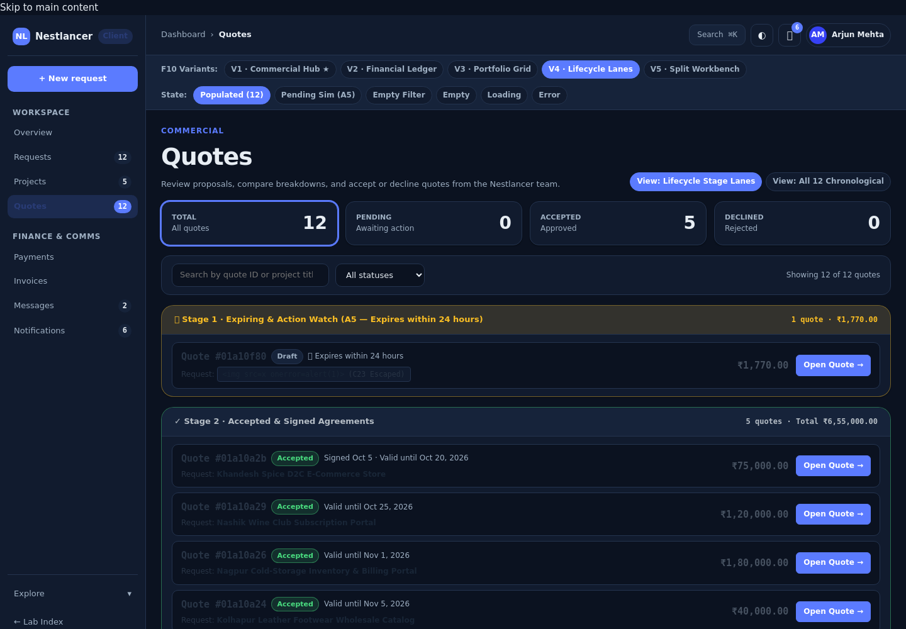

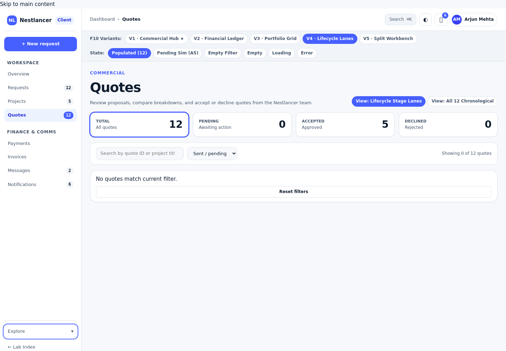

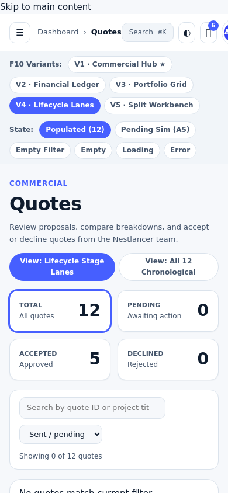

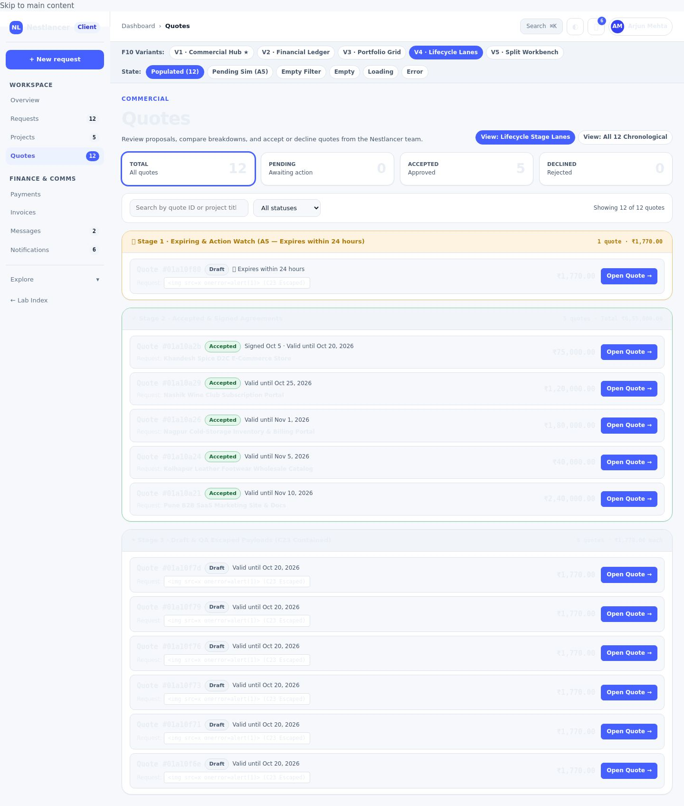
#3 · V5 · Split Master-Detail Workbench — 65.0
Source (unmodified): client-portal-lab/families/F10-quotes-list/V5/index.html
· Raw evidence: review-evidence/raw/F10-V5-raw.json
Task clarity (3/4): List + Live Quote Inspector (expiry status, total, deposit & payment schedule, Open Full Quote Details) answers 'what am I looking at?' without navigation - though the default inspected quote is a Rs.1,770 draft, not the most consequential one.
Usability (3/4): Whole-row selection buttons feed the inspector; unified search/status works. Row accessible names embed the XSS-fixture string verbatim.
Visual craft (3/4): Inspector card is well structured; list typography is the family's most readable.
Responsive (2/4): 98px h-scroll at 390px and the split stacks list-first, so the inspector benefit arrives late on mobile.
Accessibility (2/4): Only version with a light-mode ARIA violation (aria-required-children x1, likely the list/inspector structure) + dark contrast x35.
Integrity (2/4): Inspector prints the full quote UUID and 'C23 Escaped' provenance labels - engineering metadata in a client decision surface.
Interaction / task results (V5)
| Task | Result |
|---|---|
| T1_first_screen | H1='Quotes'; see desktop/mobile top screenshots |
| T2_keyboard | 12/12 stops focus-styled, 12/12 in viewport |
| T3_core_desktop | pass via select "Sent / pending" |
| T3_core_mobile | pass via select "Sent / pending" |
| T4_theme | toggle: pass (dark false->true); dark capture applied=True |
| T5_demo_honesty | no [data-demo] element probed (none present or pilot family - see probe2) |
| T6_mobile | h-scroll mobile=98; nav probe opened=False btnW=None; tap<24px=2 |
| T7_axe | desktop: aria-required-children x1; dark: aria-required-children x1, color-contrast x35 |
Issues (4)
- major
F10-V5-I1Horizontal page scroll at 390px (98px); rightmost: {'tag': 'DIV', 'cls': 'header-actions', 'right': 488} (raw overflow_mobile; F10-V5-mobile-light-top.png) - major
F10-V5-I2axe desktop: aria-required-children x1 (#queue-list) Fix any of the following: Element has children which are not allowed: button[tabindex] (axe-core 4.10.2 desktop) - major
F10-V5-I3axe dark: aria-required-children x1 (#queue-list) (axe-core 4.10.2 dark) - minor
F10-V5-I4axe dark: color-contrast x35 (.brand-mark, .portal-pill) (axe-core 4.10.2 dark)

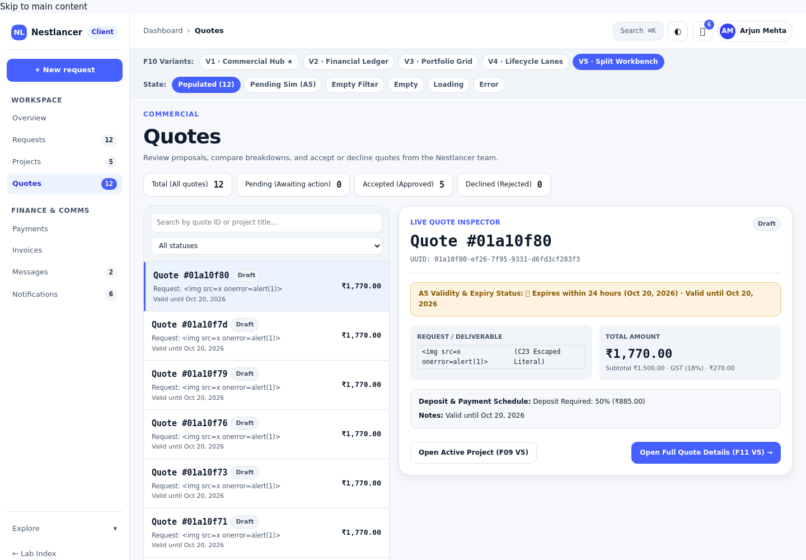

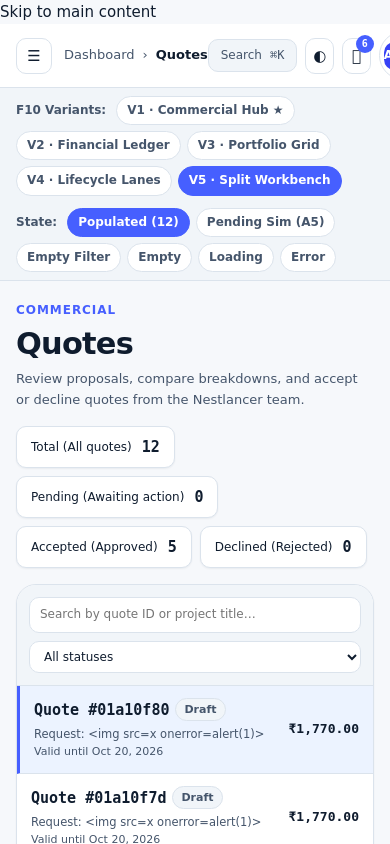

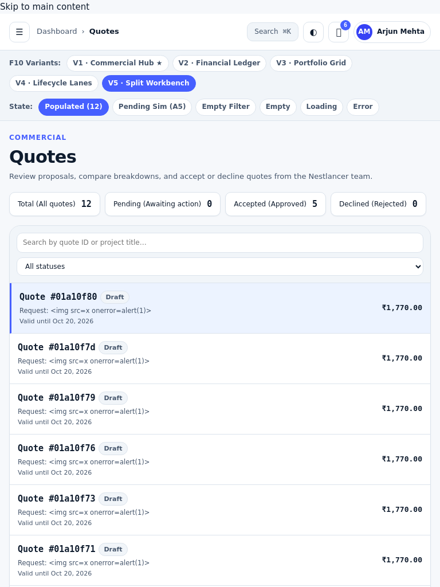

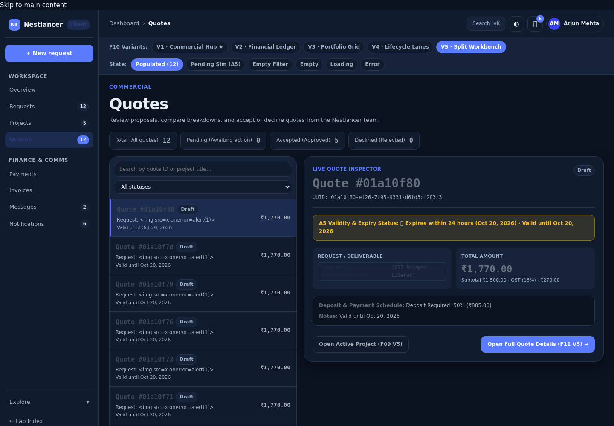

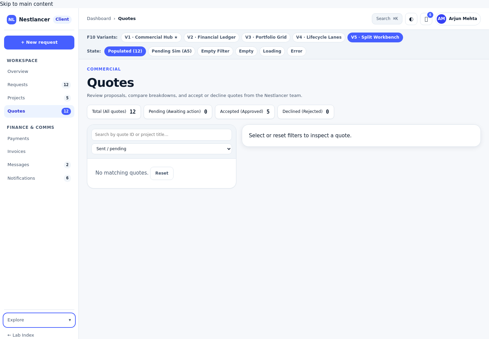

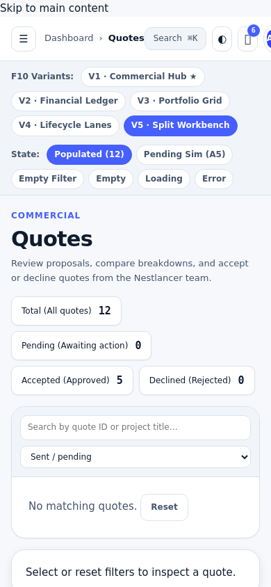

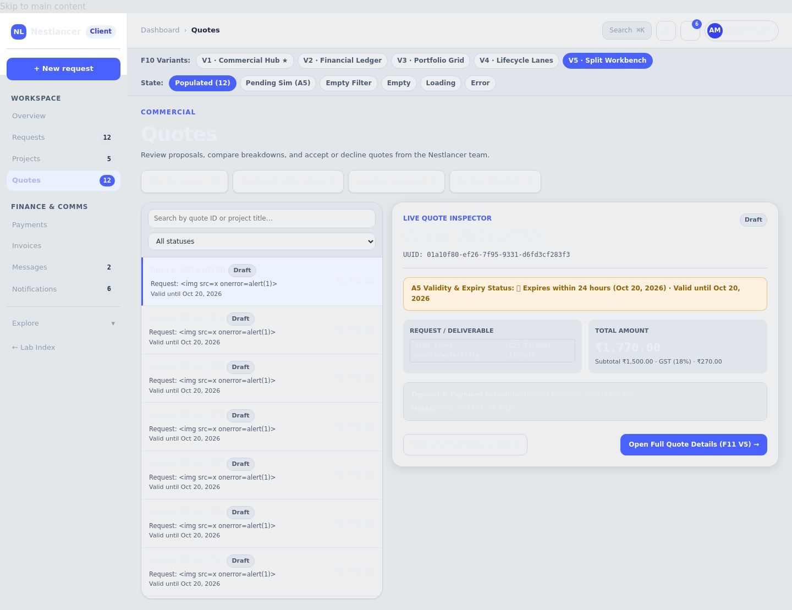
Blind comparison boards
Seeded labels A–E; the screenshots contain in-page version identifiers, so true blinding was incomplete. Mapping (review-evidence/raw/blind-mapping.json): A=V1 · B=V2 · C=V5 · D=V4 · E=V3.
One AI evaluator generated the board and mapping; board notes above were recorded in the session transcript before the mapping file was opened. This is a bias-reduction aid, not true experimental blinding.

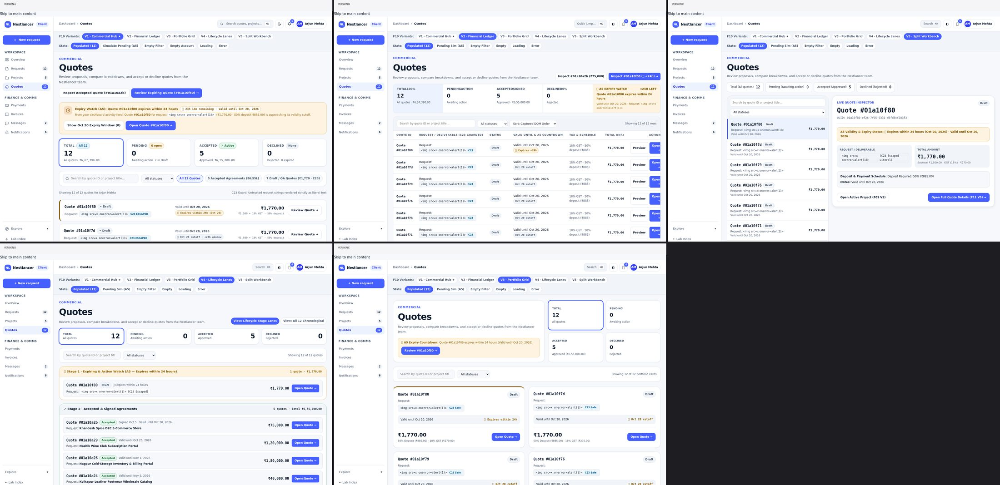

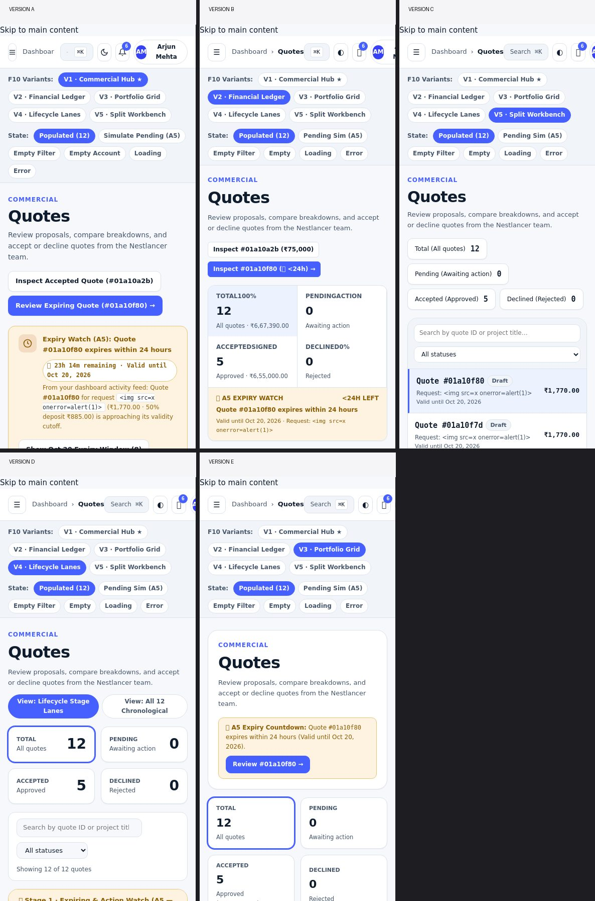
Pairwise consistency check (one evaluator, not votes)
| Pair | Better for family task | Reason |
|---|---|---|
| V1 vs V2 | V1 | Mobile integrity + legible labels vs ledger overflow/label bugs |
| V1 vs V3 | V1 | Expiry-first triage vs draft-first grid |
| V1 vs V4 | tie | Practical tie territory: V1 wins responsive/a11y evidence, V4 wins grouping; totals differ 3.8 on those axes |
| V1 vs V5 | V1 | Zero-overflow mobile vs inspector that arrives late on mobile |
| V2 vs V3 | V2 | Comparison ledger vs misprioritised grid |
| V2 vs V4 | V4 | Stage clarity vs label bugs |
| V2 vs V5 | V5 | Inspector workflow vs dense table on small screens |
| V3 vs V4 | V4 | Decision stages vs flat grid |
| V3 vs V5 | V5 | Inspector depth vs cards alone |
| V4 vs V5 | tie | Exact tie 65.0: stages (V4) vs inspector (V5) are equally defensible organisations; joint rank shown |
One evaluator's 10-pair consistency check (S4.2), not human votes; no Bradley-Terry/Elo applied. All 10 agree with the rubric order; the V1-V4 pair prompted the documented V4 task-clarity re-check.
Coverage, limitations, change log
Persona coverage (no votes): Coverage relevance only: shared mobile header/menu defect is most relevant to phone one-handed and motor-access profiles; 4.33:1 contrast to low-vision profiles; V4 missing H1 and V1 inert tab pattern to keyboard/screen-reader profiles; V3 duplicated payment to cognitive-access and first-time profiles; V5 context-thin density to first-time profiles. No persona preferred or voted.
Task script: Generic T1-T7 + family core: set status filter (Sent / pending) via the unified strip; search/sort presence recorded; dark captured via the real theme toggle (probe3) because ?theme=dark is unsupported in F10-F13 - first light-mislabelled dark captures were replaced and the correction logged in raw files.
- First-pass scores assigned from blind boards + raw evidence before reading prior winner claims (still unread).
Environment: Chromium 131.0.6778.33 (HeadlessChrome, Playwright bundled build chromium-1148) · Playwright 1.49.1 (pinned in review-evidence/tooling/package.json)
· axe-core 4.10.2 (pinned) · NOT cross-machine pixel-reproducible: no Docker in sandbox; pinned Playwright/Chromium used consistently for every page in this run.
Full record: review-evidence/review-manifest.json; machine data: review-evidence/scores.json.